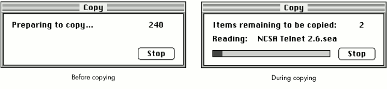
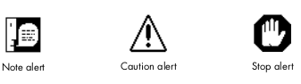
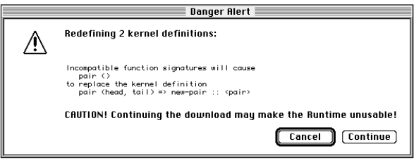
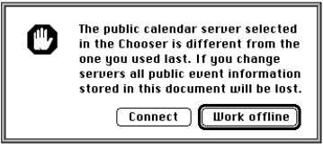
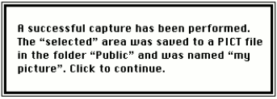

This article expands on the Macintosh Human Interface Guidelines for making
attractive, helpful alerts (and dialogs) with a standard appearance and behavior.
Standardization is important, because the more familiar an alert looks to users, the
more easily they can concentrate on the message. Using the Finder as a source of good
alerts, we provide examples of different alert types and discuss how to make alerts
user-friendly.
Alerts are an in-your-face way of getting the user's attention. It's hard for a user to
ignore alerts because they block all other input to the application until the user
dismisses them. These little windows are powerful stuff. When used correctly, alerts
are a helpful way to inform the user of a serious condition that requires immediate
attention. When used incorrectly or capriciously, alerts are annoying and disruptive;
since they must constantly be swatted out of the way, their content is often ignored.
This article discusses when to use alerts, describes the different types of alerts, and
gives tips for designing alert boxes. It elaborates and expands on alert guidelines in the
Macintosh Human Interface Guidelines. At the end of the article, you're encouraged to
try your hand at evaluating some real-life alerts.
Though not implemented as such in the system, alert boxes are essentially a type of
modal dialog box. This article focuses on alerts, but the guidelines can be applied to
other dialog boxes as well. We specifically cover status dialogs here because there are
guidelines that are unique to that type of dialog.
For information on implementing alerts and dialogs in your application,
seeInside Macintosh: Macintosh Toolbox Essentials.*
Alerts provide information about error conditions and warn users about potentially
hazardous situations. They should be used only when the user's participation is
essential; in all other cases, try using another mechanism to get your point across. For
example, consider an error or output log if the messages are something that the user
may want to save.
The Macintosh Human Interface Guidelines haven't caught up yet with the main
recommendation in this article: that alerts be movable and application modal. The
current interface guidelines and system software don't allow alerts to be movable, but
this may change in future versions of the Mac OS. Until then, you can implement your
alerts as movable modal dialogs.
Making alerts movable is helpful in case an alert is covering information on the screen
that the user would like to see before responding to the alert. Another advantage to
movable alerts is that they have a title, which gives the user a context for the error.
Application modal means the alert is modal in the current application only: the user
can't interact with this application while the alert is on the screen, but can switch to
another application. This is especially useful when the user needs to get information
from another application in order to respond to the alert. (System modal, on the other
hand, means the user can't interact with the system at all except within the alert box.)
Alerts come in three varieties, each of which is geared to a different situation. This
section provides a few examples of each type, and also takes a look at status dialogs.
NOW HEAR THIS: NOTE ALERTS
A note alert simply conveys information, informing the user about a situation that has
no drastic effects and requires no further action. For example, if a user selects a word
and executes a spell check, an alert saying that the word is spelled correctly would be a
note alert. Rather than provide a smorgasbord of options, a note alert contains a single
button to dismiss the alert.
Don't use an alert to signify completion of a task; use alerts only for situations that
require the user to acknowledge what has occurred. For example, the following note
alerts are inappropriate and get in the user's way:
WATCH OUT! CAUTION ALERTS
Caution alerts warn users of potentially dangerous or unexpected situations. You
should use them, for example, to be sure the user wants to proceed with a task that
might have undesirable results. In this case the alert normally contains only two
buttons -- one that cancels the operation and one that confirms it. Here are two
caution alert messages:
Don't use alerts to confirm operations that would cause only a minor inconvenience if
performed by mistake. Here are two examples of unnecessary caution alerts:
Caution alerts are also used when an unexpected situation occurs and the user needs to
decide what to do next. The following examples contain only two buttons, for canceling
or confirming the operation, but such an alert may present several choices if
appropriate.
Before deciding to use this type of alert, double-check to see if it's really needed;
superfluous alerts are a bad idea because users will get in the habit of dismissing
alerts and possibly let an important one go by. It's better to have a user make choices
with commands instead of alerts. For example, the Finder has separate Shut Down and
Restart commands (in its Special menu) instead of having only a Shut Down command
with an alert asking "Restart after shutting down?"
HOLD IT: STOP ALERTS
Use a stop alert when calling attention to a serious problem that prevents an action
from being completed. They typically have only one button, to dismiss the alert. Here
are two good examples of stop alerts:
It's especially important in stop alerts to give enough detail about the problem to help
the user prevent it in the future. The following alert message doesn't convey much
useful information:
This alternative is more helpful:
Similarly, if the chosen name is too long, it's more helpful for the message to state the
maximum number of characters a filename can have.
EVERYTHING IS OK: STATUS DIALOGS
Status dialogs inform the user when an application is busy and the user cannot
continue working in the application until the operation finishes. In the Finder, these
operations include copying, moving, and deleting files. Status dialogs should be
displayed whenever the application is busy for more than about five seconds (unless
posting and updating the dialog would take most of that time). During this time the
application should also change the pointer to the standard wristwatch.A status dialog
differs from an alert in that the user doesn't need to explicitly dismiss the dialog; it
goes away on its own once the task has completed. The dialog should contain a message
that describes the status of the operation and a progress indicator to show how much of
the job has been completed. A status dialog may change messages depending on the stage
of operation. Figure 1 shows a status dialog at two stages of a copy operation.

Figure 1. Status dialog during a copy operation
A sense of completion is important, so the application should be sure not to remove the
status dialog until the progress indicator shows that the operation is done (such as by
completely filling up the status bar in the example in Figure 1).
Alert boxes always contain an icon that identifies the type of alert, as shown in Figure
2. (Status dialogs contain no icon.) If you implement your alerts as movable modal
dialogs, there's no Toolbox infrastructure set up for getting the correct icon
automatically, so you'll need to remember which one to use.

Figure 2. Icons for specific alert types
A note on OpenDoc and alert icons: OpenDoc part editors aren't as
visible to the user as today's applications, but at times it may be important
for users to make the connection between a running editor and its stored
representation on disk. One such time is when the editor is reporting an error
about itself, such as an incompatible version; for these errors, the alert
should contain the icon of the editor instead of a note, caution, or stop icon.
The alert message is the most important component of an alert. You want users to read
and respond to your alerts easily and then continue smoothly with their work. This
section gives tips on structure, content, tone, and other important factors in writing
effective alert messages.
SITUATION, REASON, SOLUTION
Every alert message should start by describing the situation that led to the alert,
letting the user know what's wrong. This is usually followed by the reason the problem
occurred and a proposed solution to the problem. When describing the situation that
caused an alert, be as specific as possible, to help the user understand the problem.
Giving the reason the alert occurred is especially helpful when the application can't do
something because it's dependent on some other operation that it can't control. For
example, compare these messages:
The first message doesn't give the user any information about why the problem
occurred. Is the application that created the document missing? Is the file corrupted?
The second message is much better because it tells the user why the operation could not
be completed.
Whenever possible, alerts should indicate a solution for the user. Users become
extremely frustrated when an alert says something is wrong but doesn't offer a remedy
to the problem. Even worse is an alert that tells the user something is wrong when the
application could have fixed the problem itself. The following would be a bad message
because the Finder is capable of quitting all the applications on its own:
In cases where the application can perform the action itself, consider whether doing so
may surprise the user; if so, presenting a caution alert may be more appropriate. For
example, if the user attempts to shut down a Macintosh while other users have it
mounted as a server, the Finder could just disconnect the other users automatically;
however, in this case it's more helpful to present an alert confirming the shutdown.
BE CONSISTENT
Be sure your alert messages are consistent in tone, content, and structure with each
other as well as with other messages your software presents to the user. Are your
application's alerts consistent with its status messages, for example? Do all your
alerts refer to the application in a consistent manner? Users pick up on small
inconsistencies, and even subtle differences can cause confusion.
BE BRIEF
Alert messages should be brief and to the point, to keep the user's attention. If you need
to give a lot of information, consider writing it to an error log or providing a brief
message in the alert along with a button to get to the application's help system.
If you absolutely have to put a long message in an alert, keep in mind that many people
have PowerBook computers or "classic" Macintosh computers with small screens. A
good rule of thumb is that an alert message must consist of no more than 150
characters to fit on a small screen. Also note that translation from English to other
languages tends to expand the length of the message. Even translations into languages
that use Roman characters can cause the message length to double or triple in size.
BE ENCOURAGING
Use a positive and constructive tone. After encountering a problem and being presented
with an alert, the last thing the user wants is an overly negative response from the
application. Avoid assigning blame or offending users. Don't accuse them of doing
something wrong or stupid. Instead, give the reason an action cannot be performed, or
offer to perform the action. Which message would you rather see?
PHRASING AND TERMINOLOGY
Don't use double negatives, such as "No items are not used." They're difficult for users
to understand and just bad English. Double negatives can be especially confusing when
combined with a Cancel button; the user rarely gets the expected outcome.
Keep the situation and action in the present. This is clearer and usually requires fewer
words. For example, compare these two messages:
If there's an implied subject of a message, it should be the application. For example, if
the user tries to open a document that the application can't open (as when it runs out of
memory), the alert message might begin "Cannot open document." Messages in which
the user or some other noun could be the implied subject are more likely to be
confusing -- for example, "Have exceeded allotted network time. Try again later."
Use terms that are familiar to the user. This often means avoiding computer jargon at
all costs. Remember, terms that seem common to you may be unfamiliar to many
Macintosh users. It depends on what type of user will be working with your
application. For example, the expression establishing a connection may be clearer than
handshaking to many users.
Use invalid instead of illegal. The user hasn't broken the law, but has simply given the
application some information that it can't handle.
PUNCTUATION AND CAPITALIZATION
Alert messages should always be complete sentences, beginning with a capital letter
and ending with a period or question mark. The closing punctuation gives a sense of
completion and lets the user know that the message hasn't been truncated.
Don't use colons when requesting that the user supply information; instead, use a
period. This makes your alerts consistent with other dialogs and user interface
elements in the system software.
Use an apostrophe ('), typed with Option-Shift-], rather than a single straight
quotation mark ('), and use curly (" ") rather than straight (") double quotation
marks -- that is, Option-[ and Option-Shift-[, rather than Shift-'.
Use double quotation marks around any names in the message that are variable, such as
names of documents, folders, and search strings. This lets the user know exactly what
part of the message is the name. Remember that Macintosh filenames can contain
spaces, which can make things really confusing without the quotes. Commas, periods,
and other punctuation characters should be placed outside the quotation marks:
Never use an exclamation point or all uppercase letters. It makes users feel as if
they're being shouted at, as in this example:
STATUS MESSAGES
In status dialogs, use an ellipsis (Option-semicolon, a character that looks like three
periods) to indicate that an intermediate process is under way:
For describing the status of a task, the terms canceled, failed, in progress, and
complete are good choices. Avoid computer jargon such as aborted, killed, died, or
ack'ed.
Every movable alert should have an informative title, to provide a context for the
alert. Users may be working on several tasks at the same time and may not remember
what action generated the alert. A well-chosen title helps the user figure out not only
which application caused the alert to appear, but also which action.
The title of the alert should be the same as, or closely related to, the command or
action that generated the alert. (If the command has an ellipsis in it, don't include the
ellipsis in the alert title.) For example, when a user copies or duplicates an item in
the Finder, the associated status dialog has the title "Copy"; when the user chooses
Empty Trash, the title of the Finder's status dialog is "Trash."
Like menu commands, alert titles are capitalized like book titles. Capitalize every
word except articles (a, an, the), coordinating conjunctions (for example, and, or),
and prepositions of three or fewer characters (except when the preposition is part of a
verb phrase, as in "Turn Off").
Alerts contain buttons that dismiss the alert or allow the user to make choices
regarding how to proceed. The standard button height is 20 pixels.
Try to limit the number of buttons that appear in an alert. The more buttons, the more
difficult it is for the user to decide which is the "right" option. In addition, screen size
often limits the number of buttons. As a general rule, about three buttons of ten or
fewer characters will fit on a small screen. Button names should be simple, concise,
and unambiguous.
Capitalize button names like book titles (for example, Connect to Server). Never
capitalize all letters in the name (except for the OK button, which should always be
named OK and never ok, Ok, Okay, okay, OKAY, or any other strange variation).
On the Macintosh, ellipses are used after command names when the user needs to
provide additional information to complete the command. An ellipsis after a button
name indicates that the button leads to other dialogs, a rare but occasional occurrence.
THE ACTION BUTTON
Alert boxes that provide the user with a choice should be worded as a short question to
which there is an unambiguous, affirmative response. The button for this affirmative
response is called the action button.
Whenever possible, label the action button with the action that it performs. Button
names such as Save, Quit, or Erase Disk allow experienced users to click the correct
button without reading the text of a familiar dialog. These labels are often clearer than
words like OK or Yes. Phrase the question to match the action that the user is trying to
perform.
If the action can't be condensed conveniently into a word or two, use OK. Also use OK
when the alert is simply giving the user information without providing any choices.
THE CANCEL BUTTON
Whenever possible, caution alerts should provide a button that allows the user to back
out of the operation that caused the alert. This button should be labeled "Cancel" so that
users can easily identify the safe escape hatch. Cancel means "dismiss this operation
with no side effects"; it doesn't mean "done with the alert," "stop no matter what," or
anything else. Pressing Command-period or the Escape key should have the same effect
as clicking the Cancel button.
Don't label the button Cancel when it's impossible to return to the state that existed
before an operation began; instead, use Stop. Stop halts the operation before its normal
completion, accepting the possible side effects. Stop may leave the results of partially
completed tasks around, but Cancel never does. For example, a Cancel button would be
inappropriate for a copy operation in which some of the items may have already been
copied. Figure 1 (earlier in this article) illustrates using Stop in a status dialog for a
copy operation.
THE DEFAULT BUTTON
The default button represents the action performed when the user presses the Return
or Enter key. This button should perform the most likely action (if that can be
determined). In most cases, this means completing the action that the user started, so
the default button is usually the same as the action button.
The default button's distinctive bold outline appears automatically
around the default button in alerts, but remember that in dialog boxes you
need to outline the button yourself.*
If the most likely action is dangerous (for example, it erases the hard disk), the
default should be a safe button, typically the Cancel button. If none of the choices are
dangerous and there isn't a likely choice, there should be no default button; by
requiring users to select a button explicitly, you protect them from accidentally
damaging their work by pressing the Return or Enter key out of habit.
Now, for a bit of fun. I've been collecting some alerts that need improvement (Figures
3, 4, and 5). Based on the information in this article, can you find the flaws in each,
and suggest improvements? The main problems with the alert in Figure 3 are as
follows:

Figure 3. Poorly designed "danger alert"
Also, the buttons are slightly shorter than the standard height. Since the audience in
this case is programmers, the words kernel and runtime are acceptable, though the
use of runtime in this context is colloquial and can be more clearly stated with a
simpler word. To improve this alert, you could change the title to "Download" and the
message to "The code you are downloading redefines one or more kernel definitions.
Continuing the download may make the application unusable." Also, the buttons should
be made 20 pixels high.
The alert in Figure 4 isn't movable, so it has no title and can't be repositioned. The
message, with its "If . . ." clause, isn't direct and clear enough. Also, it's not clear
which button provides a safe escape mechanism. Finally, the "Work offline" button
title has incorrect capitalization. To improve the alert, you could make it movable and
give it the title "Connect to Server." The message should be "The public calendar
server selected in the Chooser is different from the one you used last. Connecting to the
new server will cause all public event information in your document to be lost." You
could add a Quit button as an escape mechanism, giving the alert three buttons -- Quit,
Connect, and Work Offline (the default).

Figure 4. Poorly designed "server alert"
The alert in Figure 5 doesn't contain any title, icon, or buttons. Because there are no
buttons, it's not clear how to get rid of the message without reading to the end of it.
Also, its message should be stated in the present (for example, is named). But the
biggest problem is that this is a nuisance alert: the success of the capture could have
been confirmed in an earlier step, when the user was asked to pick the filename. The
solution is to get rid of the alert altogether.

Figure 5. Poorly designed "finished alert"
Spending some time thinking about the design of your application's alerts makes sense
because it results in a better product. If you follow the simple guidelines presented in
this article, your alerts should be in really good shape. Your users will have an easier
time recovering from errors, adding to their positive experience with your software.
RECOMMENDED READING
PAIGE K. PARSONS (parsons@apple.com) is a Human Interface Specialist at Apple.
For two years she worked on the user interface of the Apple Dylan Development
Environment. She recently began working at Apple's Human Interface Design Center,
where she is responsible for software user interface issues in the PowerBook division.
Favorite diversions include maintaining a Web site for the House Rabbit Society
(http://www.psg.lcs.mit.edu/~carl/paige/HRS-home.html) and trolling used record
shops in Berkeley for vintage vinyl.
Thanks to our technical reviewers Pete Bickford, Sharon Everson, Chris Forden,
Elizabeth Moller, and Mark Stern.